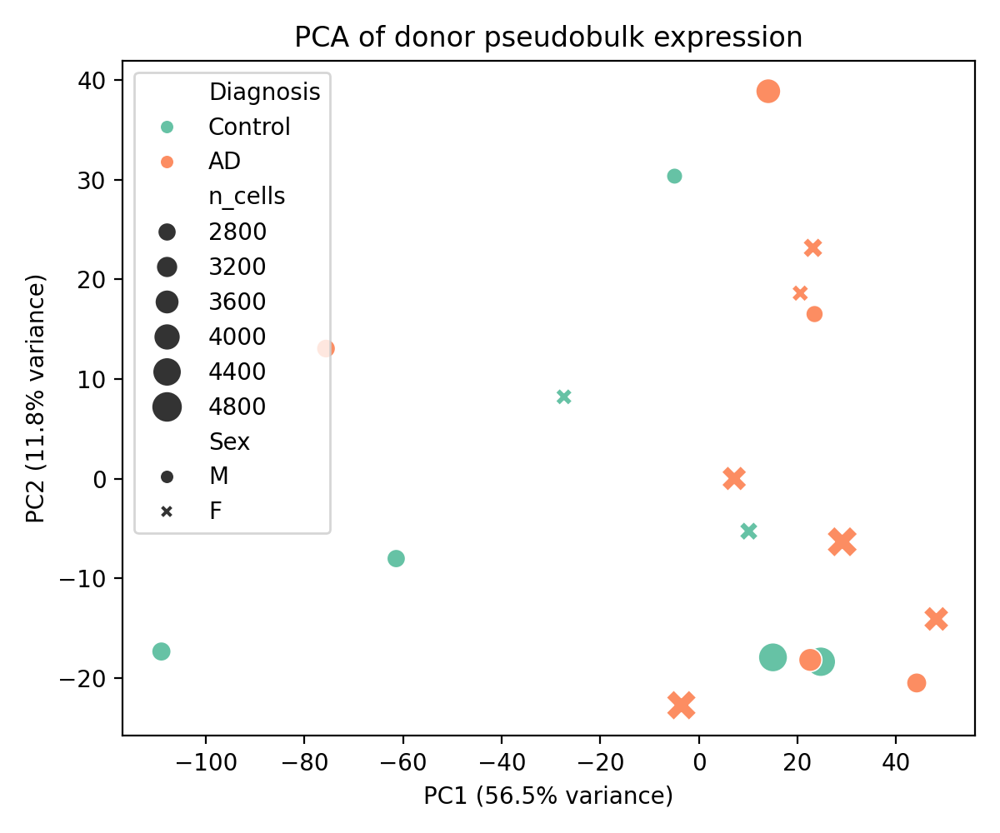
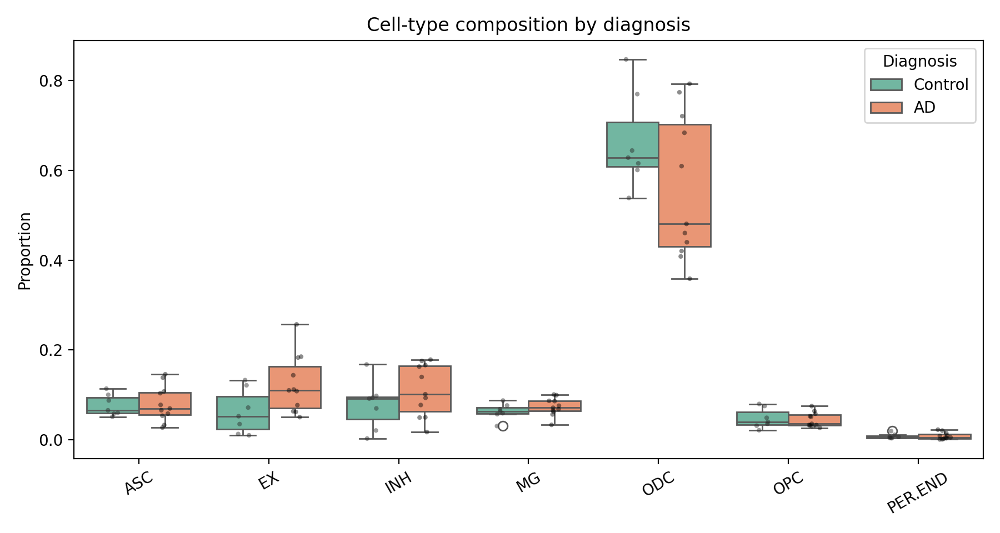

Thomas Deitel · Project portfolio
Alzheimer's Disease Transcriptomics
COGS 138 · 2026 · Python and machine learning
I analyzed the public GSE174367 single-nucleus RNA-seq dataset to explore differences between Alzheimer disease and control donors.
Analysis
The completed analysis includes 18 donors (11 Alzheimer disease, 7 control) and 61,472 matched nuclei. I aggregated nuclei into donor-level pseudobulk profiles, explored PCA and UMAP, compared cell-type composition, and evaluated models using leave-one-donor-out classification.

Results and limits
Logistic regression on PCA features achieved 0.667 accuracy and 0.649 balanced accuracy. Random forest on highly variable genes achieved 0.611 accuracy and 0.578 balanced accuracy. These are exploratory classical baselines, not a validated diagnostic classifier or a completed foundation-model comparison.
Small donor counts and possible batch, age, sex, and cell-type confounding limit the conclusions. Candidate expression differences require independent validation.
